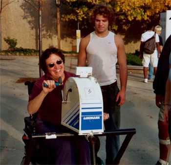

Home / Program Details / Strength and Conditioning
Strength and Conditioning
Objectives
- Develop tailored individualized strength and conditioning programs that each participant can carry out independently at home or at an accessible gym.
- Participants will have the opportunity to practice and adjust these programs during the ‘work-out’ afternoons and are expected to continue their physical activities between sessions.

Activities
Activities during project sessions will be individualized and undertaken at a self-selected pace and will be supervised by a certified athletic trainer, exercise physiologist, or physical therapist to ensure the safety and well being of participants.
Site criteria
Sessions should take place at an accessible athletic complex with accessible exercise equipment including a rowing machine, stationary bicycles, free weights, and weight lifting systems that can be specially adapted for wheelchair users and specialized equipment such as arm ergometers.
Staff
Staff should include athletic and rehabilitation specialists such as physical therapists, exercise physiologists or certified athletic trainers.
Equipment and supplies
Rowing machineStationary bikes
Free weights
Weight lifting systems
Arm ergometers
First aid kit
Water bottle
Ace wraps
Duct tape
Scissors
Gait belts
First Aid Kit
Water
Slide board
Useful links
NCPAD Strengthening Exercises